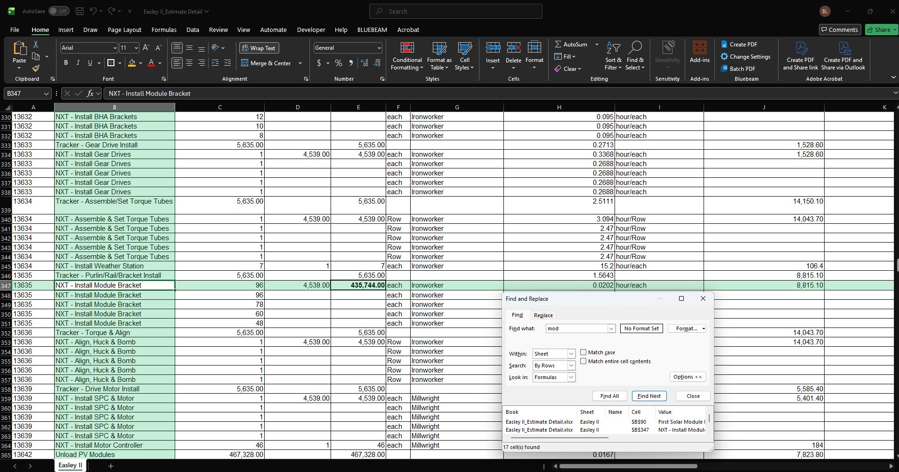
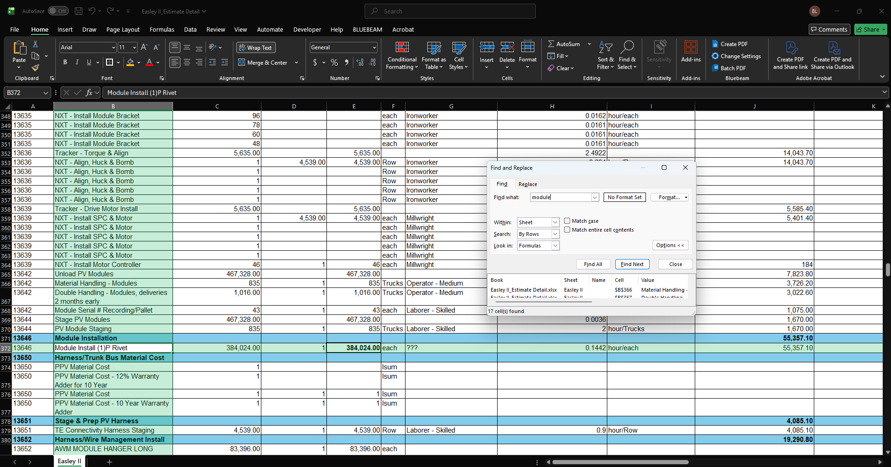
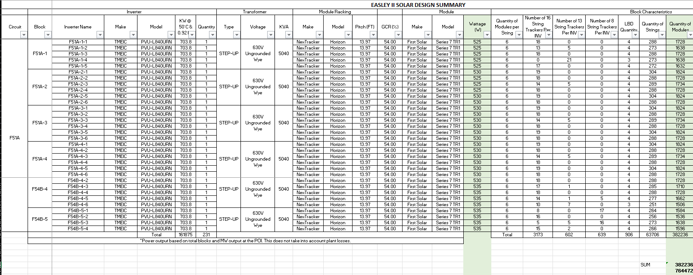

Estimation & Budget Overview
Comprehensive analysis of estimation and budgeting challenges encountered during the Easely II solar project. This documentation reviews cost estimation methodologies, identifies discrepancies between budgeted and actual labor allocations, and provides recommendations for improving future estimation accuracy. Project includes review of modular rail quantities, phase code definitions, equipment specifications, and labor allocation across installation activities.
Critical Finding: Mod rails were incorrectly estimated for the Easely project. Modules require two brackets per system in this particular installation — a detail missed by estimators. Using the Design Summary estimates should provide 268,048 additional brackets for Easely II. Budget accounting for this phase now exceeds half of what was required, significantly impacting labor forecasts and material planning.
Cost & Labor Analysis
Detailed cost breakdown and labor estimation documentation from Easely II project. Analysis includes component installation costs, labor hours by activity, material costs, and equipment staging. Cost estimates derived from actual field conditions and design specifications with hourly labor rates by trade classification.
Installation Cost Analysis - Hardware & Assembly

Cost Breakdown: Detailed line-item costs for module bracket installation (NXT 13632), gear drive assembly (13633), torque tube assembly (13634), and associated hardware. Each item includes quantity, unit cost, total cost, and hourly labor rates by trade classification.
Labor Allocation: Installation activities broken down by ironworker classification with hourly rates. Activities include bracket installation, gear drive installation, torque tube assembly, weather station installation, and module bracket installation. Costs reflect estimated quantities and crew productivity rates.
Module Installation Cost Analysis - Material & Labor

Module Installation Detail: PV module installation costs including module bracket installation (13635), torque and alignment (13636), huck bomb installation (13636), motor and controller installation (13639), and equipment handling (13642). Material handling and delivery costs accounted for trucks and operator labor.
Material & Staging Costs: Breakdown includes PV module costs, module staging labor, wiring management installation, and module hanger costs. Significant budget allocation for material handling with trucks (Operator - Medium classification) and skilled laborers. Stage and prep harness costs include TE connectivity harness staging and wire management installation.
Budget Summary by Phase
Bracket Installation: 12-10 qty, $0.095 hr/each
Gear Drives: Multiple units, $4,539 assembly cost
Torque Tubes: 5,635.00 total assembly cost
Total Structural Phase: Largest single cost component
Module Brackets: 96-48 qty per row
Rivet Installation: 384,024.00 total cost
Harness & Management: 19,280.80 allocation
Module Installation (1)P: 55,357.10 cost
Ironworker: Base rate for structural assembly
Millwright: Motor and SPC installation
Operator - Medium: Material handling trucks
Skilled Laborer: Module staging and installation
Material Handling: 835 truck deliveries
Double Handling: 1,016.00 cost
Module Staging: 835 units
Equipment Logistics: Significant budget impact
Easely II Solar Design Summary
Comprehensive design specification summary for Easely II solar facility. Documentation includes inverter and transformer specifications, module racking configuration, photovoltaic module details, and block-level characteristics. Design parameters establish basis for cost estimation, labor planning, and equipment procurement across all project blocks.
Design Specifications - Equipment & Racking Details

Inverter Specifications: TMEIC inverters with PVU-L840UFN model (703.8 kW @ 50°C & 0 SL), configured in single and STEP-UP arrangements. Inverter quantities range from 1-6 units per block, supporting both 630V and ungrounded configurations with S940 transformers.
Module & Racking Configuration: NesTracker Horizon modules (13.37 pitch, 54.00 GCR) with First Solar Series 7 TR1 and Series 7 TR1 mounting systems. Module configurations vary by block from 525V to 535V ratings, with string counts ranging from 5-6 modules per tracker. Total block characteristics include quantity summaries for 13-string trackers, 8-string trackers, and module counts across FS1A-FS4B project portfolio.
Design Summary Statistics
Manufacturer: TMEIC
Model: PVU-L840UFN
Rating: 703.8 kW @ 50°C
Voltage: 630V & Ungrounded Options
Type: STEP-UP Configuration
Voltage: 630V to Ungrounded Wye
Rating: S940 Transformers
Quantity: Varies by circuit block
Make: First Solar
Model: Series 7 TR1
Voltage Rating: 525V-535V
Quantity Tracking: Per circuit configuration
Manufacturer: NesTracker
Type: Horizon (2-axis tracking)
Pitch (FT): 13.37
GCR: 54.00% Ground Coverage
Block-Level Summary
Total Circuits: 161
Total Inverters: 231
Total Transformers: 231
Total Design Output: 161,815 kW aggregate
13-String Trackers: 3,173 units
8-String Trackers: 602 units
Total Strings: 3,775 tracking rows
Module Quantity: 63,706 modules per configuration
Circuits per Block: FS1A-FS4B configuration
Inverter Distribution: Load-balanced across 231 units
Modular Design: Repeating circuit patterns
Scalability: Consistent across all 5 project blocks
Module Count: 362,236 total modules (design basis)
Tracker Quantity: 3,775 tracking rows
Equipment Redundancy: Standardized across blocks
Cost Driver: Module bracket quantity estimation critical
Key Takeaways & Lessons Learned
Critical findings and recommendations from Easely II estimation and budgeting analysis. This section documents estimation errors, identifies root causes, and provides actionable recommendations for improving future project cost forecasting and labor planning processes.
Critical Issues Identified
1. Mod Rail Quantity Estimation Error: Modular rail quantities were incorrectly estimated for the Easely project. Modules require two brackets in this particular system — a detail that was missed by estimators. Using the Design Summary estimates should provide 268,048 additional brackets for Easely II. The budget for this phase now exceeds half of what was actually required, creating significant labor forecast and material planning discrepancies.
2. Phase Code Definition Issues: No phase code was established for activities such as trash removal or remediation. Phase codes such as PHASE: 01048100M32 - INSTALL PILE CAPS/BHA lack clear definitions and don't align with activity quantities. Definitions are often unclear, and estimators couldn't correlate codes to specific work activities, making it difficult to interpret which phase codes map to which on-site work.
3. Equipment Specification Gaps: Many phase codes lack clear equipment definitions. Incomplete specifications create ambiguity in estimating labor requirements and material needs. Without explicit definitions, estimation teams spent significant effort interpreting phase codes, leading to inconsistent cost allocations across project activities.
4. Labor Interpretation Challenges: In the mechanical department, there was a lot of difficulty interpreting phase codes. There weren't always ideal definitions, and often the phase codes could be rationalized one way or another. Without explicit explanations of what the estimators expected, it was up to the team to decide on solutions — sometimes generating disagreement between phases. This wasn't especially damaging because phase codes have high production and can be used for future bidding, but the system remains complicated.
Recommendations for Improvement
Action: Implement closer collaboration with experienced teams
Benefit: Reduces estimation errors from missed details
Timeline: Implement before next bid cycle
Owner: Estimating department lead
Action: Document phase code definitions and equipment lists
Benefit: Enables site teams to better interpret codes
Timeline: Complete documentation audit before mobilization
Owner: Project management + estimating
Action: Conduct pre-bid audits of all quantities
Benefit: Catches discrepancies early (like module bracket counts)
Timeline: Implement for Phase 2 estimates
Owner: QA/QC team
Action: Cross-reference all estimates against design specs
Benefit: Ensures quantity match between designs and budgets
Timeline: Establish as standard procedure
Owner: Estimating lead
Implementation Priority
High Priority: Phase code standardization and documentation. This single improvement would reduce future estimation errors and enable faster on-site interpretation of work assignments. Estimated impact: 20-30% reduction in estimation-related rework and schedule delays.
Medium Priority: Design-estimate correlation process. Creating a formal checklist that compares design quantities against estimated quantities would catch bracket count errors before budget approval. Estimated effort: 4-8 hours per project phase.
Ongoing: Estimator training and knowledge transfer. Pairing newer estimators with experienced team members improves estimation accuracy and reduces learning curve for complex solar projects. Consider shadowing program and post-project reviews to document lessons learned.